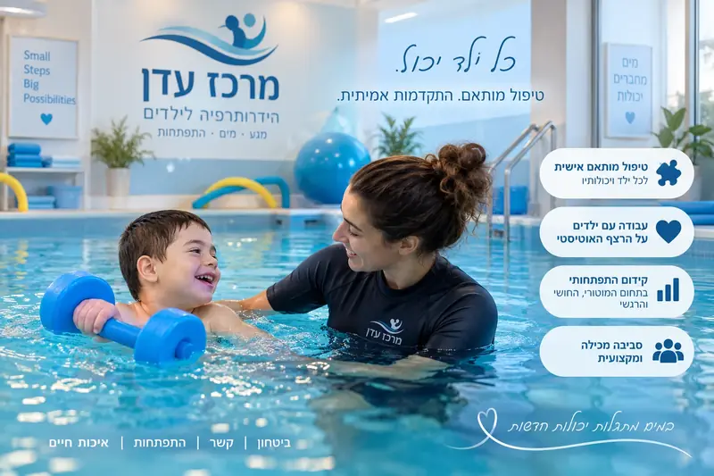

פעילות מותאמת לילדים, נוער ומבוגרים על הרצף
אין תבנית אחת שמתאימה לכולם. במרכז עדן מתחילים מהאדם, מהיכולת, מתחושת הביטחון ומהקצב האישי שלו, ורק אחר כך בונים את הדרך במים.
למה דווקא המים
עבור חלק מהילדים, בני הנוער והמבוגרים על הרצף, המים יכולים ליצור סביבת פעילות אחרת מהיומיום. הציפה, ההתנגדות של המים, הקצב הברור של המפגש והאפשרות להתקדם בהדרגה יכולים לאפשר חוויה של תנועה, ביטחון, עצמאות והצלחה. אצל כל אדם המטרות שונות ולכן אנחנו לא מתחילים מתכנית קבועה אלא מהיכרות אמיתית.
המטרה אינה לשנות את האדם אלא ליצור עבורו סביבה שבה ניתן לעבוד על מה שחשוב לו ולמשפחה שלו. זה יכול להיות ביטחון במים, מיומנויות שחייה, תנועה וקואורדינציה, תקשורת עם המטפל, שיתוף פעולה, עצמאות או פשוט יצירת חוויה חיובית ובטוחה במים.

מה מייחד את מרכז עדן
יתרון של רצף לאורך גילאים
מרכז עדן עובד עם ילדים, בני נוער ומבוגרים. המשמעות היא שניתן לחשוב על הדרך במים כתהליך מתמשך ולא כפעילות שמסתיימת בהכרח בגיל מסוים. הצרכים משתנים עם השנים, וגם המטרות יכולות להשתנות. בגיל צעיר הדגש יכול להיות היכרות, ביטחון ותנועה, בהמשך מיומנויות שחייה ועצמאות, ובבגרות פעילות מותאמת, כושר, תנועה או המשך מסגרת מוכרת.
איך נראה התהליך
אנחנו מתחילים משיחה והיכרות. בודקים מה האדם אוהב, מה מאתגר אותו, מה רמת הנוחות שלו במים ומה המשפחה רוצה להשיג. לאחר מכן בונים כיוון עבודה מתאים, עוקבים אחרי התהליך ומתאימים אותו לפי הצורך. אין תכנית אחת לכולם ואין ציפייה שאדם יתאים את עצמו לשיטה.
הייחוד של מרכז עדן בהתאמה על הרצף
אין תבנית אחת שמתאימה לכולם. אנחנו מתאימים את הקצב, הסביבה, אופן ההיכרות עם המים והמסגרת לאדם עצמו, לילד, לנער או למבוגר.